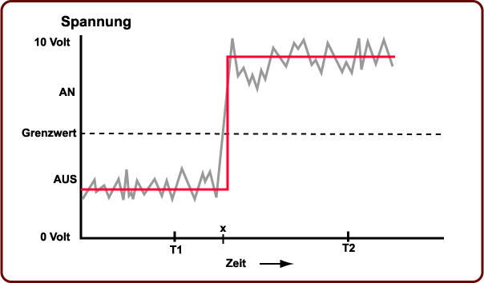

Eine gute Antwort wäre:
Ja — wenn die Signale die Stimme eines Sängers darstellen,
würde das verrauschte Signal, äh.. nun... verrauscht klingen.
Nach nur einer Kopie ist Information verloren gegangen.
Vorteile des Binären 3: Fehlerfreie Kopien
Betrachten wir noch einmal die Vorteile des Binären:
- Einfach; leicht herzustellen.
- Eindeutige Signale (daher störsicher).
- Fehlerfreie Kopien können gemacht werden.
- Alles, was in einer bestimmten Art von Muster dargestellt werden kann,
kann mit Bitmustern dargestellt werden.
Fehlerfreie Kopien können erstellt werden:
Der Empfänger des Signals ist nur an den binären Werten interessiert.
Alles was er zu tun hat, ist zu überprüfen ob das Signal oberhalb oder unterhalb des Grenzwertes ist.
Das kann fehlerlos getan werden (so lange das Störgeräusch nicht zu stark wird).
Hier ist zum Beispiel das verrauschte Signal mit den daraus geretteten "an/aus" Werten:

Das ursprüngliche Signal wurde fehlerfrei wieder hergestellt.
Dieser Vorgang kann beliebig oft auftreten, wobei jedes Mal eine fehlerfreie Kopie erstellt wird.
Das ist unbedingt notwendig in einem Computersystem,
wo Bitmuster (Muster von eins und null oder
an und aus) Millionen Mal pro Sekunde zwischen
Prozessor und Speicher hin- und herkopiert werden.
Die Kopien müssen fehlerfrei sein.
FRAGE 10:

Etwas könnte hier falsch sein.
Ist das Signal zum Zeitpunkt "x" "an" oder "aus"?
Das ist nicht leicht zu sagen.
Schlimmer, ein anderer Lärmpegel ändert die Antwort.
Was kann mit diesem Problem getan werden?
(Hinweis: Muss der Wert des Signals zu allen Zeitpunkten bekannt sein?)